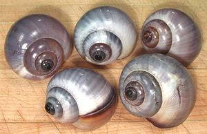

The largest of freshwater snails, Apple Snails (various species) are found in tropical and subtropical wetlands worldwide. While some species can grow to 6 inches, the largest of the photo specimens was 2.6 inches long and weighed 1.9 ounces. Others in the batch, frozen whole in Vietnam, were smaller. For greater economy, buy frozen packages of apple snail meat - 50 or more for the same price as a dozen in the shell.
The Pila snails in the photo are native to Southeast Asia and are a preferred eating snail. Unfortunately uneducated morons with get rich schemes have illegally imported Pomacea canaliculata from South America to Taiwan, Southeast Asia, the Philippines and Hawaii. These snails have never been a commercial success because snail eaters don't like them much and they are devastating rice and taro crops wherever introduced, causing severe economic damage and driving out the local snails.
More on Snails.
The edible part is the foot meat. I have found the forked ends of my crab picks (the end useless for crab) work well for removing this meat. Other stuff farther up the shell may or may not pull out with the foot meat but it is pulpy and not particularly tasty, particularly the light beige egg yolk mass of females.
A 15.8 ounce package of whole frozen snails yielded 1.6 ounces of cooked foot meat (10%). A 1 pound tray of frozen apple snail meat will yield 11 ounces thawed and drained (67%) and just under 8 ounces cooked (47%).
If using fresh snails, do see they are cooked thoroughly because they may harbor a parasite that can infect humans, causing great pain, expense, and possibly death.
Cooking: Face it, Apple Snail meat is chewy. It's a bit chewy after 5 minutes of cooking - and about the same after 5 hours. You may want to use them mainly in recipes where they are chopped fairly fine - unless you like chewy.
 Apple snail shells are quite attractive if properly cleaned and prepared.
1. Cook your snails and remove the meat for whatever use you
have in mind.
2. Return the shells to the pot and cover well with water. Bring
to a boil and simmer for a long time. Occasionally tilt them pointy end down
under the water to fill them.
3. Cool and drain. Shake the crud out by this means. Hold the
shell pointy end down and fill with hot water. Turn pointy end up and shake
up and down vigorously. Repeat until you're sure all the crud has been shaken
out.
4. Return to the pot and cover with water. Add bleach to about
20% of the liquid. Turn the shells pointy end down under water to fill them.
5. Bring to a boil and simmer until they are a nice color.
6. Rub them with mineral oil to keep them bright and preserve
the colors.